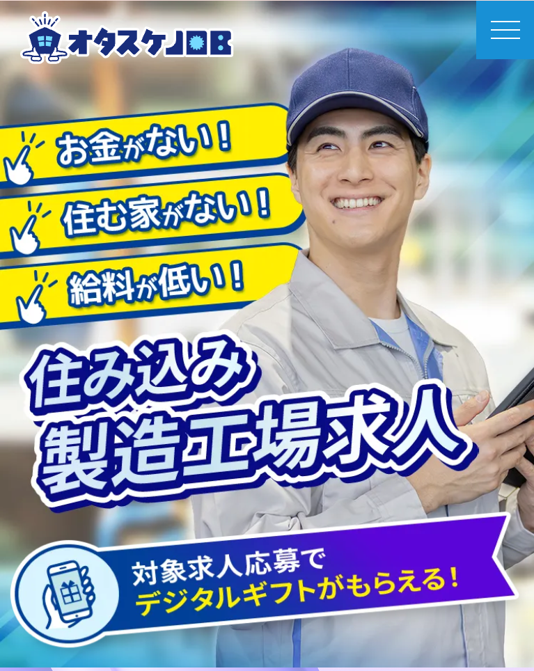
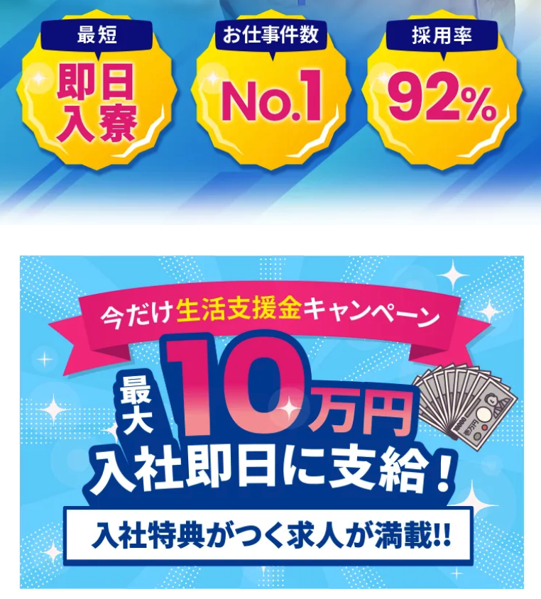
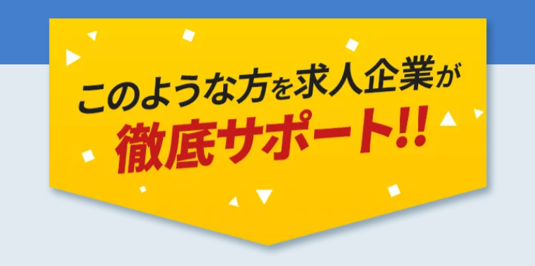
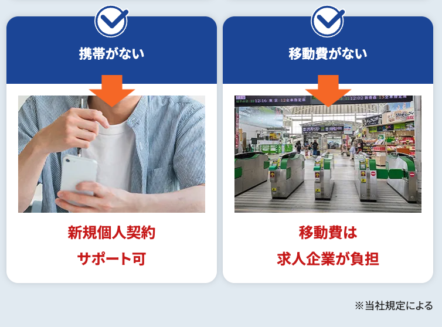
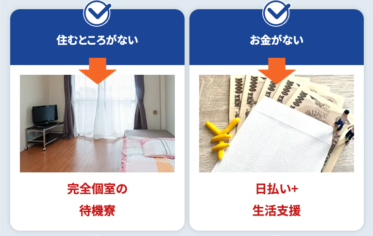

PROBLEM
その不安、相談していい内容です
もう、ひとりで悩まなくて大丈夫。
住まい・仕事・移動・入社後まで、専任担当がまとめて案内します。
SUPPORT
あなたの再スタートを支える
5つの支援
今の状況に合わせて、仕事探しだけでなく生活面まで確認します。
JOB EXAMPLES
このようなスライド形式で
職業をご紹介します
左右にスライドしながら、給与・勤務地・仕事内容を見比べられます。
※掲載内容は求人例です。募集状況・条件・支援内容は案件により異なります。
DIFFERENCE
早さだけではない
再スタート支援
求人を紹介して終わりではなく、入社まで進むこと・続けられることを重視します。
| 比較項目 | A社 | B社 | オタスケ工場JOB |
|---|
FLOW
相談から入社までの
6ステップ
初めてでも進めやすいよう、担当者が一つずつ確認します。
VOICE
利用者の声
仕事や住まいに不安があった方から寄せられた相談事例です。
FAQ
よくあるご質問
FREE CONSULTATION
まずは今の状況を
そのままご相談ください
相談・求人紹介は無料です。応募するか決めていなくても問題ありません。